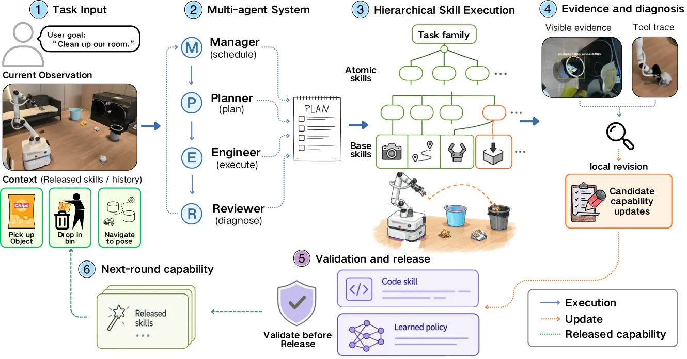
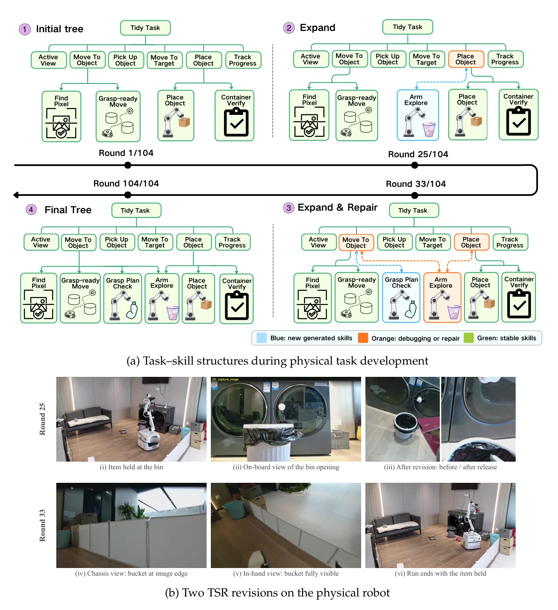
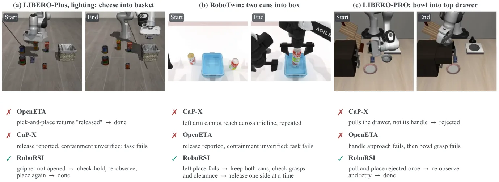

O problema da memória em robótica generalista
Robôs generalistas precisam fazer duas coisas ao mesmo tempo: executar tarefas diversas e melhorar com a experiência. Quando um robô falha ao pegar um objeto ou erra a localização de uma peça, essa informação só tem valor se ele conseguir identificar qual capacidade estava envolvida, refiná-la com base na evidência de execução e tornar o comportamento corrigido disponível para tarefas futuras.
Trabalhos recentes permitem que modelos de fundação ajam através de código. Code as Policies compõe primitivas de percepção e controle em programas executáveis. Sistemas como ETA e OpenETA intercalam planejamento e execução com observações frescas, ASPIRE adiciona programas reparados a uma biblioteca crescente de habilidades, e ENPIRE leva esse loop para experimentação física.
O desafio central permanece: como organizar a experiência de execução em torno da estrutura de tarefas que lhe dá significado? Um reparo precisa permanecer conectado ao objetivo que o motivou, pertencer à capacidade responsável pelo comportamento observado e ser validado antes de ser reutilizado. Sem essa estrutura, cada correção fica isolada, cada falha é tratada como nova e o sistema não acumula capacidades de forma estável.
A proposta: refinamento hierárquico e validação em loop
RoboRSI é um sistema de auto-aperfeiçoamento robótico construído sobre Top-Down Skill Refinement (TSR), uma abordagem que decompõe tarefas em habilidades compostas, atômicas e de base, cada uma com responsabilidades delimitadas e contratos explícitos de entrada e saída. Quando algo dá errado, o sistema atribui o resultado ao ramo responsável e confina a revisão a esse ramo.
Sobre essa estrutura hierárquica, quatro agentes coordenam o processo: um Manager organiza a hierarquia de habilidades da tarefa, um Planner compõe o plano de execução, um Engineer executa as habilidades necessárias e um Reviewer valida e libera novas habilidades. Pessoas orientam o processo através de objetivos e correções. Sequências de habilidades que se tornam estáveis são consolidadas em habilidades compostas reutilizáveis.
A ideia é simples: em vez de tratar cada execução como episódio isolado, o sistema mantém uma biblioteca de habilidades que cresce e se refina. Cada falha gera diagnóstico localizado, cada reparo passa por revisão antes de entrar na biblioteca, e habilidades bem-sucedidas são promovidas a componentes de nível superior.

Como funciona o Top-Down Skill Refinement
TSR estrutura o conhecimento do robô em três camadas. Habilidades de base são primitivas fornecidas pelo ambiente — funções de percepção, controle de movimento, manipulação de objetos. Habilidades atômicas implementam comportamentos específicos usando apenas primitivas de base, como 'pegar objeto' ou 'mover para posição'. Habilidades compostas orquestram sequências de habilidades atômicas ou outras compostas para realizar objetivos de nível superior, como 'limpar mesa' ou 'organizar cozinha'.
Cada habilidade tem um contrato explícito: pré-condições que devem ser satisfeitas antes da execução, pós-condições que garantem após sucesso, e responsabilidades claras sobre o que a habilidade deve realizar. Quando uma execução falha, o sistema percorre a hierarquia de cima para baixo, identifica qual habilidade violou seu contrato e concentra o diagnóstico e a correção nesse ponto.
Essa decomposição resolve o problema de atribuição: se 'limpar cozinha' falha porque 'pegar copo' não funciona, o sistema não revisa a estratégia de limpeza inteira, mas apenas a lógica de preensão. A correção fica confinada ao escopo responsável, preservando o resto da hierarquia. Quando 'pegar copo' é corrigido e validado, todas as tarefas que dependem dessa habilidade se beneficiam automaticamente.
O sistema multi-agente em ação
O Manager recebe uma tarefa em linguagem natural e decide se ela pode ser resolvida com habilidades existentes ou se precisa criar uma nova habilidade composta. Se a tarefa é nova, ele a decompõe em sub-objetivos e constrói uma hierarquia de habilidades candidatas, consultando a biblioteca atual e propondo novas quando necessário.
O Planner pega a hierarquia e monta um plano de execução concreto: sequência de chamadas de habilidades com parâmetros específicos, verificações de pré-condições e estratégias de recuperação. O Engineer executa o plano, chamando habilidades uma a uma, coletando observações do ambiente e registrando resultados — sucessos, falhas, estados intermediários, mensagens de erro.
Quando algo falha, o Engineer diagnostica a causa: identifica qual habilidade violou seu contrato, coleta evidências de execução (logs, observações, traços de erro) e propõe uma correção. A correção pode ser ajuste de parâmetros, mudança de lógica, adição de verificações ou criação de sub-habilidade auxiliar. O Reviewer então examina a proposta: verifica se a correção está no escopo correto, se preserva contratos de outras habilidades, se a justificativa é coerente com a evidência. Só depois de aprovação a habilidade revisada entra na biblioteca.
Esse loop continua: o robô tenta tarefas, falha, diagnostica, corrige, valida e tenta de novo. Quando uma sequência de habilidades atômicas é executada com sucesso várias vezes, o sistema a consolida em uma nova habilidade composta, que passa pelo mesmo processo de revisão antes de ser publicada. Pessoas podem intervir a qualquer momento, corrigindo diagnósticos errados, sugerindo decomposições melhores ou fornecendo conhecimento que o sistema não tem.

Experimentos no mundo real: limpeza doméstica
Os autores testaram RoboRSI em um manipulador móvel real executando tarefas de limpeza doméstica com múltiplos objetos ao longo de 104 rodadas. O robô precisava identificar objetos espalhados, pegá-los, levá-los para locais apropriados e lidar com variações de layout, iluminação e tipos de objeto.
O sistema começou com habilidades de base fornecidas (percepção visual, controle de braço, navegação) e nenhuma habilidade de nível superior. Ao longo das rodadas, desenvolveu habilidades atômicas para pegar diferentes tipos de objeto, habilidades compostas para limpar áreas específicas e estratégias de recuperação para situações de falha. A hierarquia cresceu de forma orgânica: novas habilidades eram criadas quando necessário, refinadas quando falhavam e consolidadas quando se tornavam estáveis.
O experimento físico não reporta taxa de sucesso final, mas documenta a evolução qualitativa: o número de habilidades na biblioteca, a profundidade da hierarquia, exemplos de correções bem-sucedidas e casos onde intervenção humana foi necessária. O foco está em demonstrar que o sistema acumula capacidades de forma estável, não em bater benchmarks de desempenho.
Resultados em simulação: LIBERO e variantes
Para avaliação quantitativa, os autores usaram quatro benchmarks de simulação: LIBERO, LIBERO-PRO, LIBERO-Plus e RoboTwin. LIBERO contém tarefas de manipulação em ambientes domésticos com variações de objeto e layout. LIBERO-PRO adiciona restrições temporais e dependências entre sub-tarefas. LIBERO-Plus inclui tarefas que requerem raciocínio espacial complexo. RoboTwin simula cenários de colaboração entre dois braços robóticos.
RoboRSI alcançou a maior taxa de sucesso em todos os quatro benchmarks, superando o baseline mais forte por 2,7 a 11,0 pontos percentuais. Em LIBERO, a diferença foi menor (2,7 pontos), provavelmente porque as tarefas são mais simples e o ganho de reutilização é limitado. Em LIBERO-PRO e LIBERO-Plus, onde tarefas são mais complexas e a estrutura hierárquica ajuda, a vantagem cresceu para 8,3 e 11,0 pontos.
Os autores também reportam um experimento de 'auto-iteração de um dia': o sistema rodou continuamente por 24 horas, executando tarefas, corrigindo falhas e expandindo a biblioteca. Ao final, a taxa de sucesso havia aumentado em relação ao início, demonstrando que o loop de auto-aperfeiçoamento funciona sem supervisão constante. O paper não detalha a magnitude desse ganho, mas enfatiza a estabilidade: o sistema não degradou, não entrou em loops de correção infinitos e não precisou de intervenção manual frequente.

Estudos de ablação: o que importa de verdade
Os autores conduziram ablações sistemáticas para isolar o impacto de cada componente. Remover a separação de papéis (Manager, Planner, Engineer, Reviewer) e usar um único agente reduziu o desempenho, especialmente em tarefas complexas onde diagnóstico e validação precisam de raciocínio focado.
Substituir TSR por uma biblioteca plana de habilidades — sem hierarquia, sem contratos, sem atribuição de responsabilidade — causou queda significativa. Sem a estrutura hierárquica, o sistema não conseguia localizar falhas corretamente: corrigia a habilidade errada, introduzia regressões em habilidades que já funcionavam ou falhava em reutilizar correções em contextos similares.
Desabilitar a consolidação de código — o mecanismo que transforma sequências estáveis em habilidades compostas — também prejudicou o desempenho, mas menos do que remover TSR. A consolidação acelera execução e reduz redundância, mas não é essencial para o loop de auto-aperfeiçoamento. A ablação de modelo de fundação mostrou que RoboRSI funciona com diferentes backbones, mas modelos mais capazes (GPT-4 vs GPT-3.5) melhoram diagnóstico e geração de código.
Um experimento adicional testou usar dados de execução coletados pelo sistema para treinar políticas neurais via aprendizado por imitação. As políticas aprendidas superaram baselines treinados em demonstrações humanas, sugerindo que a experiência de auto-aperfeiçoamento gera dados de treinamento de alta qualidade. No entanto, o paper não explora essa direção em profundidade.

Limitações e o que fica em aberto
RoboRSI depende de habilidades de base fornecidas. O sistema não aprende novas primitivas de percepção ou controle, apenas compõe e refina as que já existem. Se uma tarefa requer capacidade sensorial ou motora que não está na biblioteca de base, o sistema não consegue progredir. Estender o framework para aprender primitivas de baixo nível é trabalho futuro.
A validação feita pelo Reviewer é baseada em raciocínio simbólico sobre contratos e evidências de execução, mas não inclui verificação formal ou testes automatizados. Correções aprovadas podem ainda conter bugs sutis que só aparecem em situações raras. O paper não discute como garantir correção de habilidades críticas ou como lidar com falhas catastróficas.
Os experimentos físicos são qualitativos: mostram evolução da hierarquia e exemplos de correções, mas não reportam taxa de sucesso final, tempo de convergência ou número de intervenções humanas necessárias. A avaliação quantitativa fica restrita a simulação, onde o ambiente é mais controlado e as falhas menos imprevisíveis.
O sistema assume que falhas são diagnosticáveis a partir de logs e observações. Falhas causadas por degradação de hardware, ruído sensorial extremo ou eventos raros podem não deixar evidência suficiente para diagnóstico correto. O paper não aborda robustez a ambiguidade ou incerteza no processo de atribuição de responsabilidade.
Finalmente, o custo computacional não é discutido. Cada rodada envolve múltiplas chamadas a modelos de fundação (Manager, Planner, Engineer, Reviewer), cada uma processando contexto extenso (hierarquia de habilidades, histórico de execução, código de habilidades). Escalar para bibliotecas grandes ou tarefas longas pode exigir otimizações que o paper não explora.
O que o paper entrega de fato
RoboRSI demonstra que é possível construir um sistema de auto-aperfeiçoamento robótico que acumula capacidades de forma estável, organiza experiência em estrutura hierárquica e valida melhorias antes de reutilizá-las. A combinação de TSR com sistema multi-agente resolve problemas reais: atribuição de responsabilidade, confinamento de revisões, prevenção de regressões.
Os ganhos em simulação são modestos mas consistentes, e os experimentos físicos mostram que o sistema funciona em ambientes reais com variabilidade genuína. A abordagem é geral: não depende de domínio específico, não requer demonstrações humanas massivas, não pressupõe estrutura de tarefa fixa.
O que o paper não entrega é um sistema pronto para produção. As limitações são significativas, a avaliação física é incompleta e muitas perguntas ficam em aberto. Mas a direção é clara: robôs generalistas precisam de memória estruturada, diagnóstico localizado e validação rigorosa. RoboRSI mostra um caminho possível.
O que fica
- RoboRSI organiza experiência de execução em habilidades hierárquicas com contratos explícitos, atribui falhas ao componente responsável e confina correções a esse escopo.
- Sistema multi-agente coordena planejamento, execução, diagnóstico e validação; habilidades só entram na biblioteca após aprovação do Reviewer.
- Supera baselines em quatro benchmarks de simulação por 2,7 a 11,0 pontos percentuais; experimentos físicos mostram evolução estável ao longo de 104 rodadas.
- Limitações: depende de primitivas fornecidas, validação não é formal, avaliação física é qualitativa e intervenção humana ainda é necessária em alguns casos.
Paper original: RoboRSI: Stable, efficient, and reusable robot self-evolution in complex real-world environments
Comentários
Nenhum comentário ainda. Seja o primeiro.